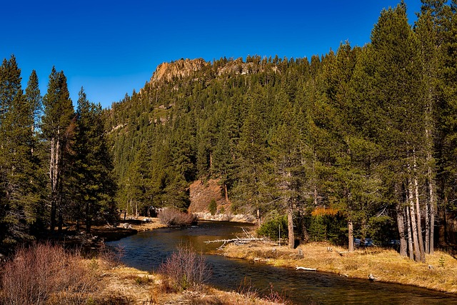

A fák olyan fás szárú, évelő növények, amelyek kiemelkedő szerepet játszanak a Föld oxigén termelésében. a fák többféle méretben és területen találhatóak.

A fák képesek egymással tápanyagot megosztani.
Tudj meg többet!| Fafajta | Típus | Átlagos magasság |
|---|---|---|
| Kocsmányos tölgy | Lombhullató | 30-40m |
| Erdeifenyő | örökzöld | 20-35m |
| Fehér nyír | Lomhullató | 15-25m |